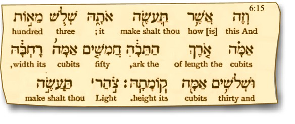
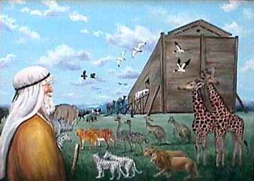
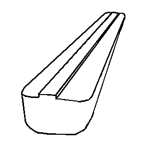

COPYRIGHT Tim Lovett © 2004, Jan05
.
.
See Whitepaper: Does Ark mean Box?
Round or square, pointed ends or not?
The Bible gives little away regarding the shape of Noah's Ark.
Mainstream creationists (if such a term can be coined) depict the ark as boxlike, with slight rounding of bottom (bilge) and ends (bow and stern). There have been many design proposed over the years, and other opinions today.
WWF is currently researching the effect that hull shape could have on wave loads, seakeeping and structural design, especially with regard to bow and stern detailing.
 |
First things first... Get the size right Noah's Ark is a familiar illustration. Mysteriously many artists seem to have lost their Bibles at the critical moment. Research has been unable to determine what problems anyone could have reading Genesis 6:15.
|
A Rounded Ark
In most illustrations (before YEC materials got around), Noah's Ark was depicted as very curved - like small boats tend to be. The reason this works for a small boat is that the hull curvature acts like the wall of a pressure vessel, so very little internal stiffening is required. In fact a small rowing boat can have almost none. Standard timber construction of keel, ribs and planking is suitable for ships up to hundreds of tonnes. So it's perfectly adequate for the dwarf arks presented in your average illustrated children's bible, or possibly even the more 'adult' one shown. This ark is around 1:3 scale, which represents a cubit of only 6 inches (150mm), the forearm length of a baby.
The rounded hull design is a logical choice for an 18th century artist. In fact this particular design, with a "house-like" structure serving as the upper deck enclosure is widespread among illustrated Bibles and Noah stories. It appears an original illustration was copied by many later artists. It's a pity they seemed to copy the wrong proportions also - the ark is invariably well short of the 10:1 length to depth ratio. It's in the Book!
There are problems with the open deck and 'house-like' superstructure. Hull strength is compromised since the section modulus is reduced, upper deck space approx halved, green seas (actual waves, not just spray) would be a threat, and Biblical references to Noah using a window seem to contradict the whole idea (he should have released the dove from the open deck). The depictions by Kircher in the 1600's make more sense of the upper deck in terms of structure and animal housing, but this pure block-shape 2 would be less than ideal in a big sea. Kircher may have been consulting the Vulgate, and reading "Arca" which means box or chest, although he was an accomplished historian and Egyptologist.
A Box Shaped Ark
 |
Cubism The scale is not too bad but why it is so tall? It is supposed to be 50 cubits wide by 30 cubits high, not the other way round. The pronounced box shape is not so pronounced in the Masoretic text. |
Most big ships have a rectangular cross-section with the addition of a simple radius at the bottom corner (Bilge radius). The reason this works on a large vessel is that internal decks and bulkheads prevent the hull walls from collapsing, plus - better cargo storage capacity. It is also easier to make flat and square things than complex curves. Hence the rectangular ark cross-section is structurally acceptable when internal decks and bulkheads are presumed. Virtually all cargo ships today are relatively rectangular in cross-section amidships, with a flat bottom. This makes it much easier to dry dock and keeps the vessel upright.
Some have presumed a block shape because the dimensions given in Genesis are length, width & height. By itself not a very convincing reason, but then you have to agree it is the simplest interpretation possible. However, ship are specified this way without ever implying a block shaped hull.
Another argument is that the ark was not a transport ship but a barge. While minimizing drag may have been a low priority compared to a transport ship, it is not necessarily better off with blunt ends. Such barges are more often restricted to the relatively flat waters of rivers and harbors, but an ocean-going barge would prefer bow and stern detailing to improve its sea-keeping performance.
The word "ark" (Hebrew tabhah, Strongs 8392 Perhaps of foreign derivation.; a box:-ark.) is the same word used for the thing that baby Moses was sent floating down the Nile. The word does not appear elsewhere, so it has nothing to do with the 10 commandments box as indicated by English translations. But if the boxlike connotation is really there, then the reed basket of baby Moses is a rather odd shape. The same applies to the Greek word Kibotos selected by Jewish Rabbis in their Greek translation - it is used exclusively for Noah and baby Moses. In Dec 2004, WWF addressed the question of Biblical hints on the shape of Noah's Ark. The conclusion? No clues other than the stated dimensions. See Does Ark mean Box?
And finally there is the influence of alleged eyewitness accounts. Perhaps the most influential is the account of George Hagopian 1 recorded around 1970 where he described visiting the ark in 1908 and 1910 as a young boy. He described the ark as very large and rectangular. Drawings were made on the basis of his description, and George approved this final image http://www.noahsarksearch.com/LeeElfred/09.JPG. In the absence of alternatives, this image became the default ark for subsequent creationist literature, or strongly influenced both artists and scientists. (See image below) Another well known account is that told by Ed Davis. A World War II US serviceman stationed in the Middle East, who befriended the local (Muslims) and was taken on a trek to view the ark on a mountainside. However, what he saw was reportedly in two pieces and covered in rubble and snow, so he may not have seen the bow and stern anyway. There are issues regarding his distance and access to Mt Ararat at that time (1043
 |
The ark as illustrated in the 1993 Korean research paper. "Little is known about the shape and form of the Ark’s hull. However, several explorers have each claimed that they have discovered the remains of the Ark at some sites on Mt. Ararat. Based on their arguments and references, we estimated the form of the Ark’s hull as that of a barge-type ship." This image appears to be based on the paintings by Elfed Lee which were approved by George Hagopian. |
Ark Design Factors
The required hull shape is dictated by the wave and wind conditions during the flood. In heavy seas, the ark must avoid broaching - turning side-on to the waves. A vessel of 150m is not so large that a wave (or sequence of waves) could not capsize it. Navigational or direction keeping aids like sails and rudder should not be ruled out, especially since the ark "moved around on the surface". One thing we can say, if the waves were larger than 6m or so, the design starts to get a little serious.
References
1. The account of George Hagopian (1898 -1972). The Ark on Ararat Tim La Haye, John Morris. Creation Life Publishers 1976, p70, point 4 "The Ark was very long and rectangular. Parts of the bottom were exposed and he could see that it was flat. The roof was nearly flat, except for a row of windows, 50 or more, estimated size 18 x 30 inches, running front to back covered by an overhanging roof. The front was also flat. The sides tipped out a little from bottom to top." Return to text
2. The pure block-shape. The best term is "cuboid". Almost every other term has a negative connotation or implies some non-geometric information. For example, "box" is easily confused with the Latin derived "ark", linking somewhat dubiously to the Ark of the Covenant. See Does Ark mean Box? There has been some use of the term "barge" or "barge-shaped", and while ocean going barges are less streamlined than ships they are certainly not cuboid. Return to text
{kind=link}